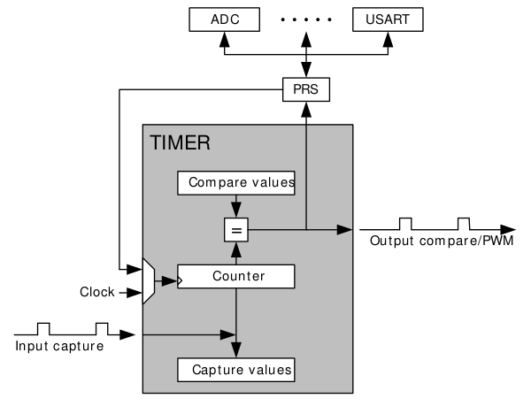

A transmitting walkie-talkie must record, compress and transmit audio in a limited time frame. Similarly, a receiving walkie-talkie must receive, decompress and play the audio in a limited time frame. One of the challenges of working with embedded devices is the relatively limited resources available, in particular we were using a device whose processor was clocked at 14Mhz. With this clock speed compressing and sending the data took so much time that we were not able to sample audio at the 8Khz we desired. DMA was the clear solution to this problem.
Ordinarily memory is accessed by the CPU. A DMA (Direct Memory Access) system can be used to access memory without using the CPU, this is useful because it allows the CPU to carry out more useful work whilst the DMA controller takes care of memory transfers.
To record audio we used an analogue microphone which was connected to the Prospeckz's analogue to digital converter (ADC). My task was to write some code that would use the board's DMA controller to transfer samples from the ADC to main memory.
To use the EFM32's DMA the following must first be configured:
A DMA channel - this specifies the source of our data
DMA Descriptors - these specify the size of the unit of data being transferred: e.g. a single byte, the size of the increment for the source pointer and the size of the increment for the destination pointer.
Once configured we can start the DMA by making a call to DMA_ActivateBasic();
To begin a transfer from the ADC to memory we provide a pointer to some buffer in memory, and a pointer to the register that contains the next sample from the ADC, a typical call looks like this:
DMA_ActivateBasic(DMA_CHANNEL_ADC,
true,
false,
(void *) &ramBufferAdcData,
(void *) &(ADC0->SINGLEDATA),
ADCSAMPLES - 1);
The DMA controller then executes ADCSAMPLES transfers from the ADC to the buffer in memory, once complete an interrupt is generated, the CPU is now free to read the data from the buffer.
The EFM32 has a system which allows peripherals to communicate with each other without using the CPU, this system is called the Peripheral Reflex System (PRS). I used PRS to trigger ADC conversions, the results of which were read by the DMA controller and transferred to main memory. To get a sample rate of 8Khz I needed to find a way to generate 8000 PRS signals per second.
Like DMA PRS has a number of channels which can be used for communication between separate peripherals. Timers can be used as a source signal for a PRS channel so that when a given timer overflows, a signal is sent to the given PRS channel, this signal can then be used to trigger some sort of action in the peripheral. In our case we are triggering the ADC to convert the analogue signal from the microphone to a digital signal which can be transferred to memory.
Each timer has a counter and a limit. The timer's counter is incremented by 1 on each clock cycle. On each clock cycle the timer's counter is compared with its limit, if the counter is greater than the limit a timer overflow occurs and the timer's counter is reset to 0.
Given that the processor's clock was running at 14Mhz, I did a simple calculation to find a value for the timer's limit which would generate 8000 PRS signals per second.
clock frequency / sample rate = 1750
14 * 10 ^ 6 / 8000 = 1750

I wrapped all of my work into a nice API for use by the other components of our project:
void record(uint32_t *pcm_buf, unsigned int pcm_bufsize, unsigned int numof_secs);
The function seems quite self-explanatory: the caller supplies a buffer, the size of that buffer and the number of seconds audio they wish to record. It is the caller's responsibility to provide an appropriately sized buffer for the amount of audio data they wish to record. If the buffer is not large enough to hold n seconds of audio then audio data at the start of the buffer is overwritten: the buffer is treated as a circular buffer.
This design worked well for a system where the user pushes a button to record for a predetermined duration and transmit that audio to the other devices but for a true walkie-talkie a different design was required. For a true walkie-talkie we must be able to continuously record and transmit audio data indefinetely. Mike Walters suggested that the 'ADC PingPong' method documented in one of the EFM32's Application Notes may be of some use. With PingPong we use two buffers, in this manor data can be read from a buffer by the CPU whilst the other buffer is being written to by the DMA controller, once the DMA controller has filled its buffer the buffers are swapped over (efficiently accomplished by swapping pointers) and the DMA controller can begin writing to the other buffer.
Since these two PingPong buffers are constantly being swapped we need a larger third buffer, when the DMA controller has finished filling a buffer the CPU can copy the data to the third buffer. Other components of our project read data from this third buffer, where they may compress the data, transmit it to another device, etc.
I built the following API for continuous recording:
void start_recording(uint8_t *pcm_buf, unsigned int pcm_bufsize) void stop_recording(void); bool read_chunk(uint32_t **chunk);
Here we have a function start_recording which sets up the DMA controller and begins the recording, the stop_recording function is used to stop the recording. read_chunk is a slightly more interesting function: read_chunk takes a reference pointer and sets it to point to the next un-read chunk of audio data. If there is no unread audio data in the circular buffer read_chunk returns false, this allows the user of read_chunk to poll for new audio data, for example:
uint32_t *audio; // a pointer to our audio data
uint32_t *compressed_audio;
for (;;) {
if (read_chunk(&audio)) {
compress(audio, compressed_audio);
send(compressed_audio);
}
}
To reduce the amount of recording work done by the CPU to an absolute minimum I removed the two PingPong buffers and got the DMA controller to write directly to our larger circular buffer. A pointer is used to keep track of the next part of the buffer to be written to.
As an additional task I spent some time experimenting with a digital microphone (Analog Devices ADMP441). With the help of Mike Walters I was able to get data from the digital microphone directly by setting interrupts on USART2, interestingly the microphone was connected to USART1 but the Prospeckz board is configured in such a way that it is not possible to transfer I²S data over USART1. Together we came up with a neat hack: we used jumpers to bridge the connection between USART1 and USART2 which enabled us to transfer data from the microphone over USART2.
The next step was to use the DMA controller to transfer the data. I modified the code I'd used previously to transfer data from the ADC, various small changes were required, in particular, instead of reading the data from the ADC we read from USART2. I wasn't able to get the DMA controller to read data from the microphone, for some unknown reason the DMA controller was not receiving any interrupts from the microphone.
#include <stdbool.h>
#include "efm32.h"
#include "efm32_dma.h"
#include "efm32_cmu.h"
#include "efm32_emu.h"
#include "efm32_adc.h"
#include "efm32_prs.h"
#include "efm32_opamp.h"
#include "efm32_timer.h"
#include "efm32_int.h"
#include "dmactrl.h"
#include "dac.h"
#include "audio_rec.h"
#define DMA_CHANNEL_ADC 0
typedef struct {
uint8_t *pcm_buf;
unsigned int pcm_bufsize;
} Dma;
Dma dma;
/* DMA callback structure */
DMA_CB_TypeDef cb;
/* Transfer Flag */
volatile bool transferActive;
bool enable_transfer = false;
uint8_t *end_of_data;
uint8_t *read_pointer; // a pointer to the chunk which should be read next
#define SAMPLE_RATE 8000 // 8000 hz sample rate
void ADC0_IRQHandler(void)
{
/* Clear interrupt flag */
ADC_IntClear(ADC0, ADC_IFC_SINGLEOF);
printf("ADC IRQ: DMA couldn't keep up with ADC sample rate :(\n");
while(1) {
/* ERROR: ADC Result overflow has occured
* This indicates that the DMA is not able to keep up with the ADC sample
* rate and that a samples has been written to the ADC result registers
* before the DMA was able to fetch the previous result */
}
}
int transfernumber = 0;
void transferComplete(unsigned int channel, bool primary, void *user)
{
Dma *dma = (Dma *) user;
uint8_t *cyclic_buf = dma->pcm_buf;
static int p = 2 * NUMOF_ADC_SAMPLES;
transfernumber++;
if (p >= dma->pcm_bufsize)
p = 0; // move back to the beginning of the cycle
if (enable_transfer) {
/* Re-activate the DMA */
DMA_RefreshPingPong(channel,
primary,
false,
&cyclic_buf[p],
NULL,
NUMOF_ADC_SAMPLES - 1,
false
);
}
else {
ADC_Reset(ADC0); // stopping adc
transferActive = false;
printf("transfer complete!\n");
}
p += NUMOF_ADC_SAMPLES;
if (p >= dma->pcm_bufsize)
end_of_data = cyclic_buf;
else
end_of_data = &cyclic_buf[p];
if (read_pointer == end_of_data) {
printf("warning: about to overwrite data that has not been read! :-(\n");
enable_transfer = false;
}
}
// Enabling clocks
void setupCmu(void)
{
CMU_ClockEnable(cmuClock_TIMER0, true);
CMU_ClockEnable(cmuClock_PRS, true);
/* Enabling clocks */
CMU_ClockEnable(cmuClock_DMA, true);
CMU_ClockEnable(cmuClock_ADC0, true);
// Try enabling DAC (experimental)
CMU_ClockEnable(cmuClock_DAC0, true);
}
// Configure DMA for Ping-pong ADC to RAM Transfer
void setupDma(Dma *dma)
{
DMA_Init_TypeDef dmaInit;
DMA_CfgChannel_TypeDef chnlCfg;
DMA_CfgDescr_TypeDef descrCfg;
/* Initializing the DMA */
dmaInit.hprot = 0;
dmaInit.controlBlock = dmaControlBlock;
DMA_Init(&dmaInit);
/* Setup call-back function */
cb.cbFunc = transferComplete;
cb.userPtr = dma;
/* Setting up channel */
chnlCfg.highPri = false;
chnlCfg.enableInt = true;
chnlCfg.select = DMAREQ_ADC0_SINGLE;
chnlCfg.cb = &cb;
DMA_CfgChannel(DMA_CHANNEL_ADC, &chnlCfg);
/* Setting up channel descriptor */
descrCfg.dstInc = dmaDataInc1; // tell dma to increment by a byte
descrCfg.srcInc = dmaDataIncNone;
descrCfg.size = dmaDataSize1; // tell dma to read just one byte
descrCfg.arbRate = dmaArbitrate1;
descrCfg.hprot = 0;
DMA_CfgDescr(DMA_CHANNEL_ADC, true, &descrCfg); // configure primary descriptor
DMA_CfgDescr(DMA_CHANNEL_ADC, false, &descrCfg); // configure alternate descriptor
/* Setting flag to indicate that transfer is in progress
will be cleared by call-back function */
transferActive = true;
uint8_t *cyclic_buf = dma->pcm_buf;
/* Enabling PingPong Transfer*/
DMA_ActivatePingPong(DMA_CHANNEL_ADC,
false,
(void *) cyclic_buf,
(void *) &(ADC0->SINGLEDATA),
NUMOF_ADC_SAMPLES - 1,
(void *) &cyclic_buf[NUMOF_ADC_SAMPLES],
(void *) &(ADC0->SINGLEDATA),
NUMOF_ADC_SAMPLES - 1);
}
void setupAdc(void)
{
// Connect PRS channel 0 to TIMER overflow
PRS_SourceSignalSet(0, PRS_CH_CTRL_SOURCESEL_TIMER0, PRS_CH_CTRL_SIGSEL_TIMER0OF, prsEdgeOff);
// Select TIMER0 parameters
TIMER_Init_TypeDef timerInit =
{
.enable = true,
.debugRun = true,
.prescale = timerPrescale1,
.clkSel = timerClkSelHFPerClk,
.fallAction = timerInputActionNone,
.riseAction = timerInputActionNone,
.mode = timerModeUp,
.dmaClrAct = false,
.quadModeX4 = false,
.oneShot = false,
.sync = false,
};
/* For an 8000 Hz sample rate we need 8000 overflows per second
* with a 14Mhz clock we can get 8000 overflows per second by setting the
* 'top' value to 1750
*
* clock_frequency / sample rate = 1750
*
* Or...
*
* f = 1/t, f - frequency, t - time period
*
* t = 1 / 14 * 10^6
* (1 / 14 * 10^6) * 1750 = 1 / 8000 seconds
*
* So there will be 8000 overflows per second.
*/
TIMER_TopSet(TIMER0, 1750);
TIMER_Enable(TIMER0, true);
ADC_Init_TypeDef adcInit = ADC_INIT_DEFAULT;
ADC_InitSingle_TypeDef adcInitSingle = ADC_INITSINGLE_DEFAULT;
/* The ADC clock does not directly control the sample rate,
* the sample rate is controlled by the frequency of the PRS signal
* the PRS signal triggers and ADC conversion which then triggers a DMA transfer
*/
adcInit.prescale = ADC_PrescaleCalc(7000000, 0); // Set highest allowed prescaler (may as well)
ADC_Init(ADC0, &adcInit);
adcInitSingle.reference = adcRefVDD;
adcInitSingle.input = adcSingleInpCh1;
adcInitSingle.resolution = adcRes8Bit;
adcInitSingle.prsEnable = true;
adcInitSingle.prsSel = adcPRSSELCh0;
ADC_InitSingle(ADC0, &adcInitSingle);
/* Enable ADC single overflow interrupt to indicate lost samples */
ADC_IntEnable(ADC0, ADC_IEN_SINGLEOF);
NVIC_EnableIRQ(ADC0_IRQn);
}
// Note: This function was written by Mike Walters,
// who was working more closely with the analogue microphone
void setupOpAmp(void)
{
OPAMP_Init_TypeDef configuration = OPA_INIT_UNITY_GAIN;
// Send the output to ADC
configuration.outMode = opaOutModeAll;
configuration.outPen = DAC_OPA1MUX_OUTPEN_OUT4;
OPAMP_Enable(DAC0, OPA1, &configuration);
}
void record(uint8_t *pcm_buf, unsigned int pcm_bufsize, unsigned int numof_secs)
{
// the number of ping pong transfers that will occur in numof_secs time
int transfer_limit = (SAMPLE_RATE / NUMOF_ADC_SAMPLES) * numof_secs;
start_recording(pcm_buf, pcm_bufsize);
printf("transfer_limit: %d\n", transfer_limit);
while (transfernumber < transfer_limit)
;
stop_recording();
}
void start_recording(uint8_t *pcm_buf, unsigned int pcm_bufsize)
{
enable_transfer = true;
setupCmu(); // configure clocks in Clock Management Unit
dma.pcm_buf = pcm_buf;
dma.pcm_bufsize = pcm_bufsize;
read_pointer = pcm_buf;
end_of_data = pcm_buf;
setupDma(&dma); // configure dma to transfer from ADC to RAM using ping-pong
setupOpAmp();
setupAdc();
}
void stop_recording(void)
{
enable_transfer = false;
while (transferActive)
; // wait till transfer halted
DMA_Reset(); // clean up after DMA transfers
}
bool read_chunk(uint8_t **chunk)
{
if (read_pointer != end_of_data) {
*chunk = read_pointer;
read_pointer += NUMOF_ADC_SAMPLES;
if (read_pointer >= dma.pcm_buf + dma.pcm_bufsize)
read_pointer = dma.pcm_buf; // move back to the beginning of the buffer
return true;
}
else
return false;
}
I believe I have made a solid contribution to this project, my code works and was used in our project's final demo.